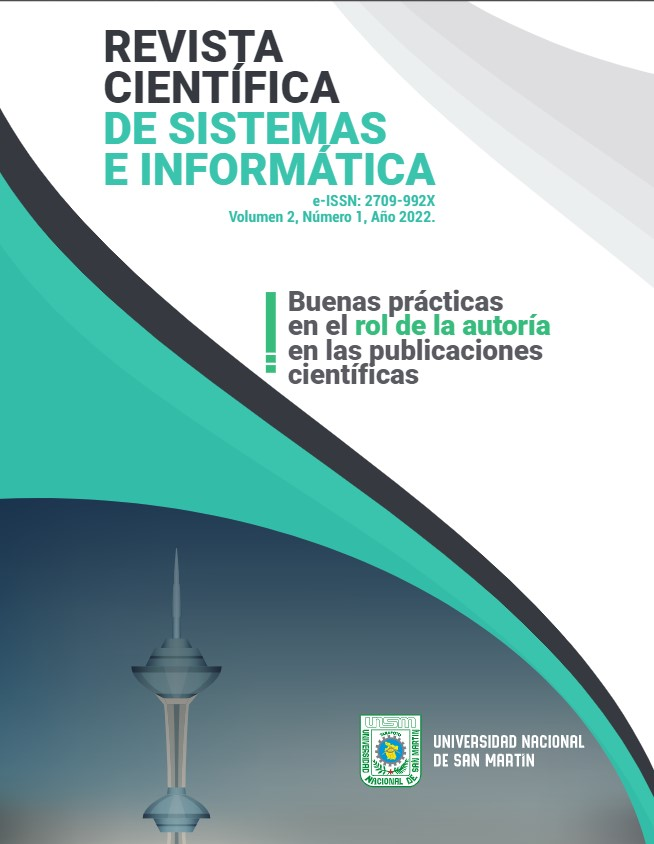

Utilidad y funcionamiento de las bases de datos NoSQL
Autor: Alexander Castro Romero | Mauro Callejas Cuervo
 Descripción:
Descripción:
Reflexiona sobre las bases de datos NoSQL, describiéndolas y analizando el porqué de su importancia y actualidad; además recopila y define algunas características de este tipo de base de datos, para revisar las taxonomías más importantes y analizar el uso conjunto de tecnologías NoSQL y relacionales, con el fin de proporcionar un punto de partida para los trabajos en esta área por parte de investigadores.
Revista de investigación de Sistemas e Informática
Autor: Augusto P. Cortez Vásquez
Descripción:
El desarrollo de la ciencia y la tecnología en el área de computación, sistemas e informática viene atravesando nuevos retos, y la Universidad es el principal espacio de generación de conocimiento que permite satisfacer las nuevas exigencias y competencias que existe en la sociedad en sus diferentes sectores como son la salud, la educación y la industria entre otros. Muy especialmente debido a la importancia que tiene la investigación básica y aplicada en el contexto por el que atravesamos a nivel mundial, a causa de la emergencia sanitaria debido a la propagación del nuevo coronavirus. Esta pandemia nos muestra nuestras debilidades como país y sociedad, pero a cambio pone en evidencia la necesidad de trabajar, mejorar y seguir impulsando la ciencia y la tecnología”. Así lo entiende el equipo editor, la ciencia e investigación básica son la base de la investigación aplicada, porque toda la tecnología que nos rodea es producto de la ciencia y “Sin ciencia, no hay tecnología”.
Algoritmos y programación en Ingeniería de Sistemas
Autor: Gallo Castro Yeferson Andres
Descripción:
Textos y libros de Ingeniería de Software se encuentran en grandes cantidades en bibliotecas o la web y muchos de ellos en varias ediciones. Entonces, ¿por qué escribir uno más? Simplemente porque no existe uno con orientación hacia proyectos y el contexto empresarial que le da sentido a la Ingeniería de Software. Existe una brecha marcada entre lo que se enseña en el aula de clase y la realidad del desarrollo de software en las organizaciones. Esta situación ha motivado una reflexión en el mundo académico acerca de las competencias y habilidades que deben ser desplegadas por los futuros desarrolladores de software y las estrategias pedagógicas que pueden ser utilizadas de manera que sus experiencias de aprendizaje estén altamente influenciadas.
Aplicaciones de programación lineal, entera y mixta
Autor: Yeicy Bermúdez Colina
Descripción:
La presente investigación se corresponde con una de tipo documental informativa; aborda la revisión de información divulgada por la comunidad científica internacional en temas relacionados con la programación lineal, programación lineal entera y programación lineal entera mixta, específicamente aplicaciones asociadas a esta temática en las diversas organizaciones a nivel mundial. Se revisaron 122 publicaciones entre los años 2002 y 2010, en los diferentes medios de divulgación científica y se seleccionaron aquellas inherentes o afines con la ingeniería industrial. De la exploración de esta información se evidencia, que los modelos de optimización basados en programación lineal, entera y mixta son ampliamente utilizados en problemas reales para formular modelos que contribuyen eficientemente en la toma de decisiones en todos los niveles organizacionales, lo cual tiene extensa contribución en la reducción de costos operativos.
Robótica Educativa. La programación como parte de un proceso
educativo.
Autor: José Miguel García
Descripción:
El presente artículo aborda la temática de la Robótica Educativa en Uruguay. Presenta una breve reseña del estado del arte, así como de distintos enfoques con que es abordada. Se analiza la robótica educativa como una forma de trabajo que sustenta el desarrollo del pensamiento computacional en niños, niñas y jóvenes de educación general, más allá de la programación, y de las orientaciones profesionales a las que se dediquen en el futuro. Se presenta la programación como una fase del trabajo en proyectos específicos elegidos por los estudiantes, en una dinámica de cuatro palabras: Imaginar, Diseñar, Construir y Programar, que componen el continuo que representa la robótica educativa y su forma de trabajo en la enseñanza primaria y media.

Revista científica de sistemas e informatica
Autor: Universidad Nacional de San Martín
Descripción:
Las revistas científicas de acceso abierto han incrementado exponencialmente el número de publicaciones y el número de autores respectivamente, los cuales pueden publicar un artículo científico y hacerse responsable de su contenido. Generalmente, el autor principal mantiene esa denominación y los otros autores suelen denominarse coautores, sin embargo, la autoría de un manuscrito es responsabilidad entera de todos los que consignan sus datos en el mismo. En muchos artículos científicos, los autores suelen invitar a otros profesionales para colaborar con los manuscritos, esta es una práctica que permite compartir diferentes puntos de vista, mejorar la calidad de la redacción científica e incluir a investigadores de diferentes nacionalidades (Jetal., 2017).
Revista Iberoamericana de automática e informática industrial
Autor: Pedro Albertos
Descripción:
Esta revista es una publicación de revisión por pares, de acceso abierto. El proceso de revisión se rige por la metodología de doble ciego. El editor realiza una evaluación inicial de todos los manuscritos recibidos para valorar su idoneidad para la revista. Los trabajos que se consideren adecuados se enviarán a un mínimo de dos revisores expertos independientes para evaluar la calidad científica del trabajo. El editor será el responsable de la decisión final respecto a la aceptación o rechazo de los artículos.